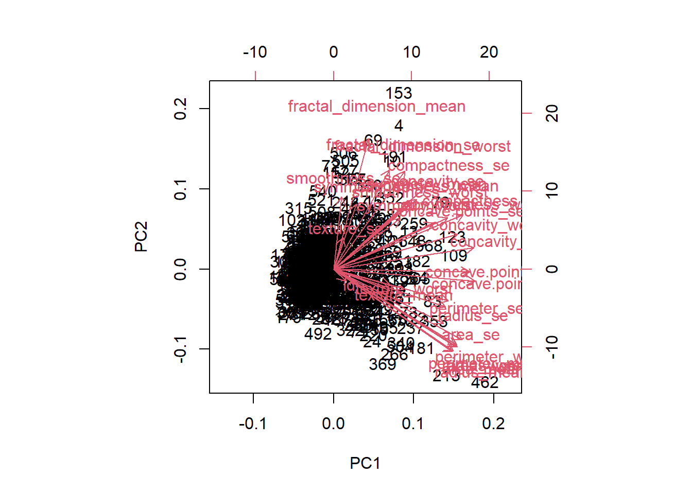
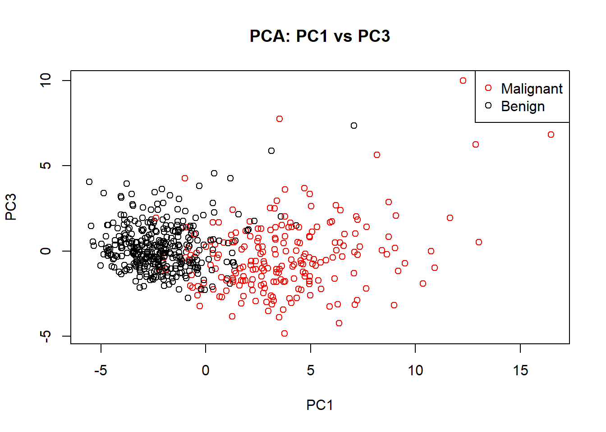
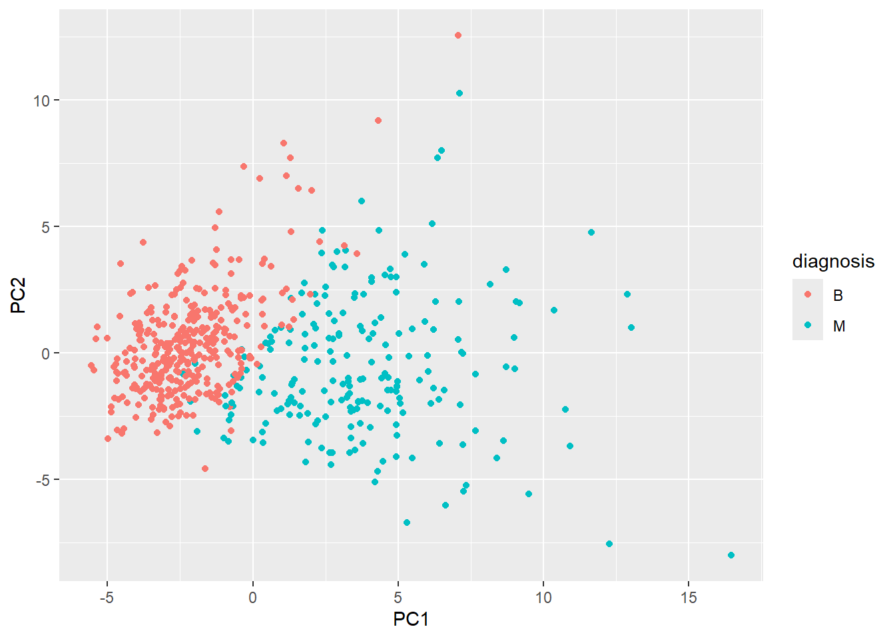
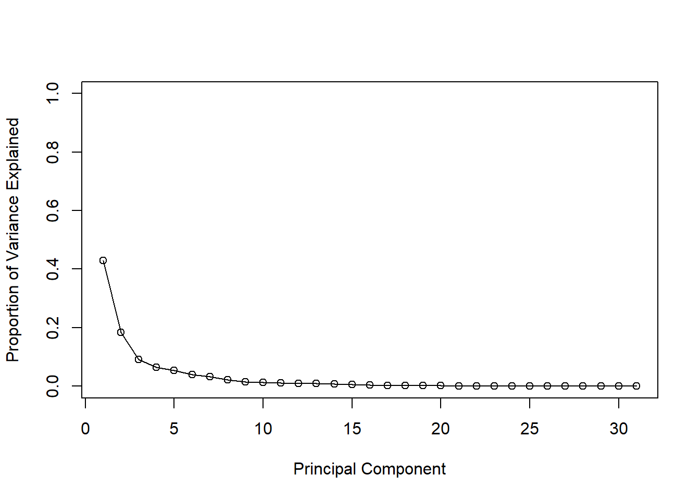
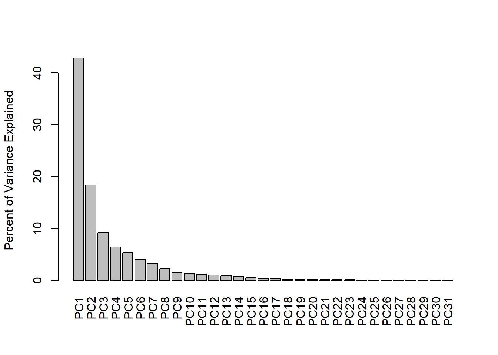
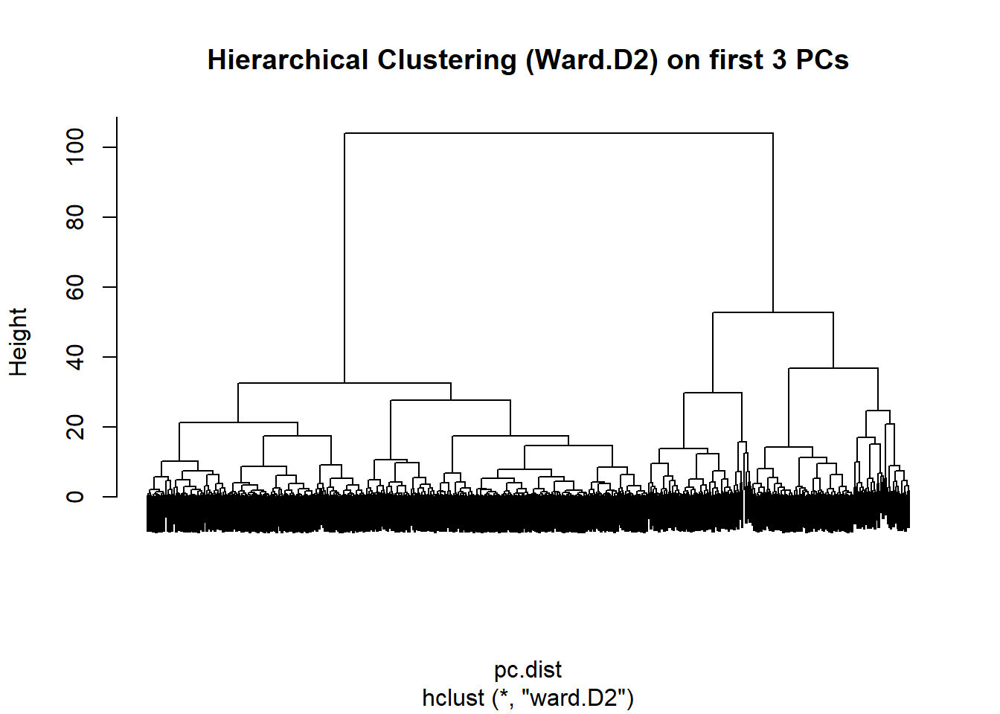
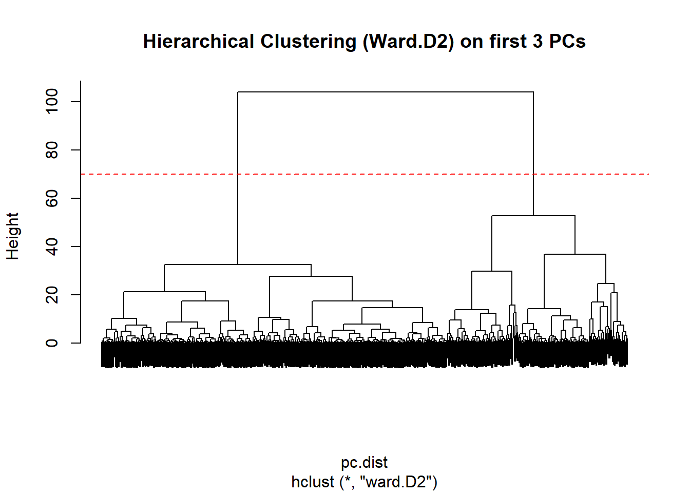
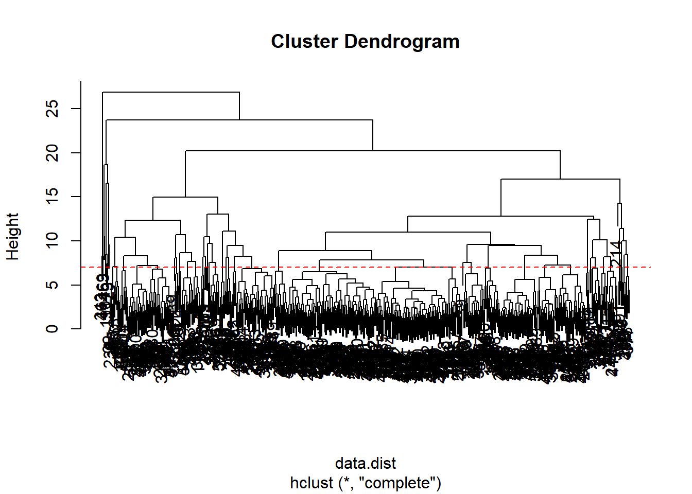

file.exists("C:/Users/Linda Kubera/Desktop/WisconsinCancer.csv")[1] TRUE##Background
The goal of this mini-project is for you to explore a complete analysis using the unsupervised learning techniques covered in class. You’ll extend what you’ve learned by combining PCA as a preprocessing step to clustering using data that consist of measurements of cell nuclei of human breast masses. This expands on our RNA-Seq analysis from last day.
The data itself comes from the Wisconsin Breast Cancer Diagnostic Data Set first reported by K. P. Benne and O. L. Mangasarian: “Robust Linear Programming Discrimination of Two Linearly Inseparable Sets”.
Values in this data set describe characteristics of the cell nuclei present in digitized images of a fine needle aspiration (FNA) of a breast mass.
##Data Import
file.exists("C:/Users/Linda Kubera/Desktop/WisconsinCancer.csv")[1] TRUE# Load the CSV into a dataframe
wisc.df <- read.csv("C:/Users/Linda Kubera/Desktop/WisconsinCancer.csv",
header = TRUE, stringsAsFactors = FALSE)# Select the columns you care about
library(dplyr) # for easy selection
Attaching package: 'dplyr'The following objects are masked from 'package:stats':
filter, lagThe following objects are masked from 'package:base':
intersect, setdiff, setequal, union# Pick key columns to display
wisc.df.selected <- wisc.df %>%
select(id, diagnosis, radius_mean, texture_mean, perimeter_mean, area_mean)
# Show first 10 rows nicely
head(wisc.df.selected, 10) id diagnosis radius_mean texture_mean perimeter_mean area_mean
1 842302 M 17.99 10.38 122.80 1001.0
2 842517 M 20.57 17.77 132.90 1326.0
3 84300903 M 19.69 21.25 130.00 1203.0
4 84348301 M 11.42 20.38 77.58 386.1
5 84358402 M 20.29 14.34 135.10 1297.0
6 843786 M 12.45 15.70 82.57 477.1
7 844359 M 18.25 19.98 119.60 1040.0
8 84458202 M 13.71 20.83 90.20 577.9
9 844981 M 13.00 21.82 87.50 519.8
10 84501001 M 12.46 24.04 83.97 475.9Remove this diagnosis from data for subsequent analysis
wisc.data <-wisc.df[,-1]
dim(wisc.data)[1] 569 31Store the diagnosis as a vector for use later when we compare our results to those from experts in the field.
# Store the diagnosis as a factor
diagnosis <- factor(wisc.df$diagnosis)Q1. How many observations are in this dataset?
There are 569 observations/patients in the dataset.
Q2. How many of the observations have a malignant diagnosis?
# Create a table of diagnosis counts
table(diagnosis)diagnosis
B M
357 212 Q3. How many variables/features in the data are suffixed with _mean?
colnames(wisc.data) [1] "diagnosis" "radius_mean"
[3] "texture_mean" "perimeter_mean"
[5] "area_mean" "smoothness_mean"
[7] "compactness_mean" "concavity_mean"
[9] "concave.points_mean" "symmetry_mean"
[11] "fractal_dimension_mean" "radius_se"
[13] "texture_se" "perimeter_se"
[15] "area_se" "smoothness_se"
[17] "compactness_se" "concavity_se"
[19] "concave.points_se" "symmetry_se"
[21] "fractal_dimension_se" "radius_worst"
[23] "texture_worst" "perimeter_worst"
[25] "area_worst" "smoothness_worst"
[27] "compactness_worst" "concavity_worst"
[29] "concave.points_worst" "symmetry_worst"
[31] "fractal_dimension_worst"# Q3: How many variables/features end with "_mean"?
mean_cols <- grep("_mean$", colnames(wisc.data))
length(mean_cols) [1] 10prcomp(x, scale=F, center=F) Most of the time, we scale the data because different features can have very different ranges. If we don’t scale, variables with larger numeric values dominate the PCA, and the smaller-scale features don’t contribute much. Scaling ensures all variables contribute equally.
Q4. What proportion of the original variance is captured by PC1?
# Remove non-numeric columns (keep only numeric features)
wisc.numeric <- wisc.data[, sapply(wisc.data, is.numeric)]
# Scale the numeric data
wisc.scaled <- scale(wisc.numeric)
# Perform PCA
wisc.pr <- prcomp(wisc.scaled, center = TRUE, scale. = TRUE)
# Summary of variance explained
summary(wisc.pr)Importance of components:
PC1 PC2 PC3 PC4 PC5 PC6 PC7
Standard deviation 3.6444 2.3857 1.67867 1.40735 1.28403 1.09880 0.82172
Proportion of Variance 0.4427 0.1897 0.09393 0.06602 0.05496 0.04025 0.02251
Cumulative Proportion 0.4427 0.6324 0.72636 0.79239 0.84734 0.88759 0.91010
PC8 PC9 PC10 PC11 PC12 PC13 PC14
Standard deviation 0.69037 0.6457 0.59219 0.5421 0.51104 0.49128 0.39624
Proportion of Variance 0.01589 0.0139 0.01169 0.0098 0.00871 0.00805 0.00523
Cumulative Proportion 0.92598 0.9399 0.95157 0.9614 0.97007 0.97812 0.98335
PC15 PC16 PC17 PC18 PC19 PC20 PC21
Standard deviation 0.30681 0.28260 0.24372 0.22939 0.22244 0.17652 0.1731
Proportion of Variance 0.00314 0.00266 0.00198 0.00175 0.00165 0.00104 0.0010
Cumulative Proportion 0.98649 0.98915 0.99113 0.99288 0.99453 0.99557 0.9966
PC22 PC23 PC24 PC25 PC26 PC27 PC28
Standard deviation 0.16565 0.15602 0.1344 0.12442 0.09043 0.08307 0.03987
Proportion of Variance 0.00091 0.00081 0.0006 0.00052 0.00027 0.00023 0.00005
Cumulative Proportion 0.99749 0.99830 0.9989 0.99942 0.99969 0.99992 0.99997
PC29 PC30
Standard deviation 0.02736 0.01153
Proportion of Variance 0.00002 0.00000
Cumulative Proportion 1.00000 1.00000# Proportion of variance captured by PC1
pc1_variance <- summary(wisc.pr)$importance[2, 1]
pc1_variance[1] 0.44272The first principal component (PC1) captures approximately 44% of the original variance in the dataset. This means that nearly half of the variability in the breast cancer measurements can be summarized by a single component.
library(ggplot2)
ggplot(wisc.pr$x) +
aes(PC1, PC2, col=diagnosis) +
geom_point()
Q5. How many principal components (PCs) are required to describe at least 70% of the original variance in the data?
Using the first three principal components, we capture about 72.6% of the total variance in the dataset. Therefore, 3 PCs are required to explain at least 70% of the original variance.
# Remove non-numeric columns (id, diagnosis)
wisc.data.num <- wisc.df %>%
select(where(is.numeric)) # keeps only numeric columns
# Run PCA on numeric data, scaling it
wisc.pr <- prcomp(wisc.data.num, scale. = TRUE)# Proportion of variance explained by each PC
pca.var <- wisc.pr$sdev^2 / sum(wisc.pr$sdev^2)
# Cumulative variance
cum.var <- cumsum(pca.var)
# Show results
pca.var [1] 4.286470e-01 1.837679e-01 9.146436e-02 6.391475e-02 5.318759e-02
[6] 3.982815e-02 3.155720e-02 2.166945e-02 1.486427e-02 1.300429e-02
[11] 1.126306e-02 9.480337e-03 8.424094e-03 7.784846e-03 5.063666e-03
[16] 3.036404e-03 2.574514e-03 1.904718e-03 1.696490e-03 1.584578e-03
[21] 1.002283e-03 9.658453e-04 8.848556e-04 7.822265e-04 5.819149e-04
[26] 4.993461e-04 2.636032e-04 2.225194e-04 5.126895e-05 2.414116e-05
[31] 4.291620e-06cum.var [1] 0.4286470 0.6124149 0.7038793 0.7677940 0.8209816 0.8608098 0.8923670
[8] 0.9140364 0.9289007 0.9419050 0.9531681 0.9626484 0.9710725 0.9788573
[15] 0.9839210 0.9869574 0.9895319 0.9914366 0.9931331 0.9947177 0.9957200
[22] 0.9966858 0.9975707 0.9983529 0.9989348 0.9994342 0.9996978 0.9999203
[29] 0.9999716 0.9999957 1.0000000Q6. How many principal components (PCs) are required to describe at least 90% of the original variance in the data?
Based on the cumulative variance results, the first seven principal components (PC1–PC7) together explain about 90% of the total variance in the dataset. In other words, while the first few components (like PC1–PC3) already capture the main structure of the data, additional components are needed to account for the smaller, more detailed patterns.
# Calculate variance explained by each PC
pca.var <- wisc.pr$sdev^2 / sum(wisc.pr$sdev^2)
# Cumulative variance
cum.var <- cumsum(pca.var)
# Find number of PCs needed to reach 90% variance
which(cum.var >= 0.9)[1][1] 8Interpreting PCA results
biplot(wisc.pr)
Q7. What stands out to you about this plot? Is it easy or difficult to understand? Why?
The biplot is quite cluttered and difficult to interpret because there are many observations and variables plotted at once. The arrows representing the features overlap heavily, making it hard to distinguish which variables are contributing most to each principal component. While it does show general groupings of samples, the large number of features makes the visualization visually overwhelming and not very informative. Overall, it’s not an effective way to interpret this dataset.
Now let’s make another plot
# Plot PC1 vs PC3 using base R
plot(wisc.pr$x[, 1], wisc.pr$x[, 3],
col = ifelse(wisc.df$diagnosis == "M", "red", "black"),
xlab = "PC1",
ylab = "PC3",
main = "PCA: PC1 vs PC3")
legend("topright", legend = c("Malignant", "Benign"),
col = c("red", "black"), pch = 1)
Q8. Generate a similar plot for principal components 1 and 3. What do you notice about these plots?
The PC1 vs PC3 plot shows that there’s still some separation between the malignant (red) and benign (black) samples, but it’s not as clear as in the PC1 vs PC2 plot. That’s because PC2 explains more of the data’s variation than PC3, so the first plot gives a sharper divide. PC3 might just be picking up smaller details or extra noise in the data.
This will give a colored scatter plot showing how the first two principal components separate the two groups.
# Create a data.frame for ggplot
df <- as.data.frame(wisc.pr$x)
df$diagnosis <- diagnosis
# Load ggplot2
library(ggplot2)
# Make a scatter plot colored by diagnosis
ggplot(df) +
aes(PC1, PC2, col = diagnosis) +
geom_point()
Variance Explained
In this step, we want to understand how much of the original data’s variance is captured by each principal component. This helps us decide how many components are meaningful and worth keeping. A scree plot is a common way to visualize this. You can look for an “elbow” in the plot a point where adding more components yields diminishing returns but sometimes the elbow isn’t obvious, and we must decide based on cumulative variance.
# Calculate variance of each principal component
pr.var <- wisc.pr$sdev^2
head(pr.var)[1] 13.288057 5.696805 2.835395 1.981357 1.648815 1.234673## [1] 13.281608 5.691355 2.817949 1.980640 1.648731 1.207357Now, let’s calculate the proportion of variance explained (PVE) for each principal component by dividing each component’s variance by the total variance.
# Variance explained by each principal component
pve <- pr.var / sum(pr.var)
pve [1] 4.286470e-01 1.837679e-01 9.146436e-02 6.391475e-02 5.318759e-02
[6] 3.982815e-02 3.155720e-02 2.166945e-02 1.486427e-02 1.300429e-02
[11] 1.126306e-02 9.480337e-03 8.424094e-03 7.784846e-03 5.063666e-03
[16] 3.036404e-03 2.574514e-03 1.904718e-03 1.696490e-03 1.584578e-03
[21] 1.002283e-03 9.658453e-04 8.848556e-04 7.822265e-04 5.819149e-04
[26] 4.993461e-04 2.636032e-04 2.225194e-04 5.126895e-05 2.414116e-05
[31] 4.291620e-06Let’s plot this to see how varience is distributed
# Plot variance explained for each principal component
plot(pve, xlab = "Principal Component",
ylab = "Proportion of Variance Explained",
ylim = c(0, 1), type = "o")
Let’s make barplots now..
# Alternative scree plot
barplot(pve, ylab = "Percent of Variance Explained",
names.arg = paste0("PC", 1:length(pve)), las = 2, axes = FALSE)
axis(2, at = seq(0, max(pve), 0.1), labels = round(seq(0, max(pve), 0.1)*100))
Installing packages for a better looking bar plot (gg2-based) scree plot
This plot makes it easier to visually assess which PCs are most important.
Q9. For the first principal component, what is the component of the loading vector (i.e. wisc.pr$rotation[,1]) for the feature concave.points_mean?
This number tells us how much concave.points_mean helps define PC1. A bigger number (positive or negative) means this feature is important for separating the samples in PC1. Basically, it shows that changes in this feature play a key role in the main pattern of variation in the data.
wisc.pr$rotation["concave.points_mean", "PC1"][1] 0.2607381For negative value..
# Flip PC1
wisc.pr$x[, "PC1"] <- -wisc.pr$x[, "PC1"]
wisc.pr$rotation[, "PC1"] <- -wisc.pr$rotation[, "PC1"]# Check the loading for concave.points_mean
wisc.pr$rotation["concave.points_mean", "PC1"][1] -0.2607381# Should now be negativeQ10. What is the minimum number of principal components required to explain 80% of the variance of the data?
About five principal components are needed to capture 80% of the variation in the dataset. This means that most of the important patterns in the data can be summarized using just these five components.
Let’s look at the cumulative variance
# Cumulative variance
cum.var <- cumsum(wisc.pr$sdev^2 / sum(wisc.pr$sdev^2))
# Find the minimum number of PCs to reach 80% variance
which(cum.var >= 0.8)[1][1] 5Next, we’ll perform hierarchical clustering on the breast cancer data. This method groups observations based on similarity without assuming a fixed number of clusters.
# Keep only numeric columns for clustering
wisc.data.num <- wisc.data[, sapply(wisc.data, is.numeric)]
# Scale the numeric data
data.scaled <- scale(wisc.data.num)# Compute Euclidean distances
data.dist <- dist(data.scaled)# Perform hierarchical clustering using complete linkage
wisc.hclust <- hclust(data.dist, method = "complete")Q11. Using the plot() and abline() functions, what is the height at which the clustering model has 4 clusters?
By plotting the hierarchical clustering dendrogram and drawing a horizontal line at height 70, we can cut the tree to form 4 clusters. Using cutree() at this height gives the following membership table (see below)
# Plot dendrogram and show 4 clusters
plot(wisc.hclust)
abline(h = 7, col = "red", lty = 2)
# Cut the tree into 4 clusters
wisc.hclust.clusters <- cutree(wisc.hclust, k = 4)
# Look at the first few cluster assignments
head(wisc.hclust.clusters)[1] 1 1 1 2 1 1# Compare cluster assignments with actual diagnosis
table(Cluster = wisc.hclust.clusters, Diagnosis = diagnosis) Diagnosis
Cluster B M
1 12 165
2 2 5
3 343 40
4 0 2Clustering the original data was not very effective.
View the tree.. (2 main clusters)
#Take the first 3 PCs
pc.data <- wisc.pr$x[, 1:3]
pc.dist <- dist(pc.data)
wisc.hclust <- hclust(pc.dist, method = "ward.D2")
plot(wisc.hclust, labels = FALSE, main = "Hierarchical Clustering (Ward.D2) on first 3 PCs")
wisc.hclust.clusters <- cutree(wisc.hclust, k = 4)
table(wisc.hclust.clusters, diagnosis) diagnosis
wisc.hclust.clusters B M
1 1 41
2 0 76
3 18 59
4 338 36plot(wisc.hclust, labels = FALSE, main = "Hierarchical Clustering (Ward.D2) on first 3 PCs")
abline(h = 70, col = "red", lty = 2)
wisc.hclust.clusters <- cutree(wisc.hclust, k = 4)
table(wisc.hclust.clusters, diagnosis) diagnosis
wisc.hclust.clusters B M
1 1 41
2 0 76
3 18 59
4 338 36To get our clustering membership vector, i.e., our main clustering result, we “cut” the tree at the desired height or to yield a desired number of k groups.
grps <- cutree(wisc.hclust, h = 70)
table(grps)grps
1 2
195 374 How does this clustering grps compare to the expert diagnosis
table(grps, diagnosis) diagnosis
grps B M
1 19 176
2 338 36After cutting the hierarchical clustering tree at a height of 70, we get two main clusters. When we compare these clusters to the actual diagnoses:
So, cluster 2 seems to represent the malignant tumors, and cluster 1 the benign ones.
Now, cutting the tree in 4 clusters
wisc.hclust.clusters <- cutree(wisc.hclust, k = 4)table(wisc.hclust.clusters, diagnosis) diagnosis
wisc.hclust.clusters B M
1 1 41
2 0 76
3 18 59
4 338 36Q12. Can you find a better cluster vs diagnoses match by cutting into a different number of clusters between 2 and 10?
By trying different numbers of clusters between 2 and 10, we find that cutting the hierarchical clustering tree into 4 clusters provides the best separation between malignant and benign diagnoses. Cluster 2 captures mostly malignant samples, and cluster 4 captures mostly benign samples, giving a clearer match than with 2 or 3 clusters.
Doing different number of clusters from 2-10
# Try different numbers of clusters from 2 to 10
for (k in 2:10) {
clusters <- cutree(wisc.hclust, k = k)
cat("\nNumber of clusters:", k, "\n")
print(table(clusters, diagnosis))
}
Number of clusters: 2
diagnosis
clusters B M
1 19 176
2 338 36
Number of clusters: 3
diagnosis
clusters B M
1 1 117
2 18 59
3 338 36
Number of clusters: 4
diagnosis
clusters B M
1 1 41
2 0 76
3 18 59
4 338 36
Number of clusters: 5
diagnosis
clusters B M
1 1 41
2 0 76
3 18 59
4 142 21
5 196 15
Number of clusters: 6
diagnosis
clusters B M
1 1 41
2 0 76
3 10 4
4 8 55
5 142 21
6 196 15
Number of clusters: 7
diagnosis
clusters B M
1 1 41
2 0 76
3 10 4
4 8 55
5 142 21
6 143 15
7 53 0
Number of clusters: 8
diagnosis
clusters B M
1 1 22
2 0 76
3 10 4
4 8 55
5 142 21
6 143 15
7 53 0
8 0 19
Number of clusters: 9
diagnosis
clusters B M
1 1 22
2 0 76
3 10 4
4 8 55
5 41 19
6 143 15
7 101 2
8 53 0
9 0 19
Number of clusters: 10
diagnosis
clusters B M
1 1 22
2 0 76
3 10 4
4 8 55
5 41 19
6 143 15
7 101 2
8 53 0
9 0 17
10 0 2Q13. Which method gives your favorite results for the same data.dist dataset? Explain your reasoning.
My favorite method is hierarchical clustering after PCA. It separates malignant and benign tumors much better than clustering the original data or k-means because PCA reduces variables and focuses on the main patterns, making the clusters clearer and easier to interpret.
Preparing the numeric data
wisc.data.num <- wisc.data[, sapply(wisc.data, is.numeric)]
wisc.scaled <- scale(wisc.data.num)# Compute distances
data.dist <- dist(wisc.scaled)
# Hierarchical clustering
wisc.hclust <- hclust(data.dist, method = "complete")
# Optional: plot dendrogram
plot(wisc.hclust)
abline(h = 7, col = "red", lty = 2)
# Cut the tree into 2 clusters
wisc.hclust.clusters <- cutree(wisc.hclust, k = 2)Now, we run the k-means
set.seed(123)
wisc.km <- kmeans(wisc.scaled, centers = 2, nstart = 20)# Perform PCA on numeric data
wisc.pr <- prcomp(wisc.data.num, scale. = TRUE)
# Hierarchical clustering on first 7 PCs
wisc.pr.hclust <- hclust(dist(wisc.pr$x[, 1:7]), method = "ward.D2")
# Cut the tree into 2 clusters
wisc.pr.hclust.clusters <- cutree(wisc.pr.hclust, k = 2)make the tables
table(wisc.hclust.clusters, diagnosis) diagnosis
wisc.hclust.clusters B M
1 357 210
2 0 2table(wisc.km$cluster, diagnosis) diagnosis
B M
1 14 175
2 343 37table(wisc.pr.hclust.clusters, diagnosis) diagnosis
wisc.pr.hclust.clusters B M
1 28 188
2 329 24##4. OPTIONAL: K-means clustering
K-means clustering is a method that partitions the data into k groups, trying to minimize the variation within each cluster. In this analysis, we use k-means to separate the breast cancer samples into two clusters, corresponding to the two diagnoses: benign (B) and malignant (M). We then compare the k-means clusters to both the actual diagnoses and the hierarchical clustering results to see how well each method captures the structure of the data.
# Keep only numeric columns for k-means
wisc.data.num <- wisc.data[, sapply(wisc.data, is.numeric)]
# Scale the numeric data
wisc.scaled <- scale(wisc.data.num)
# Run k-means with 2 clusters and 20 random starts
set.seed(123) # for reproducibility
wisc.km <- kmeans(wisc.scaled, centers = 2, nstart = 20)
# Compare k-means clusters to actual diagnoses
table(wisc.km$cluster, diagnosis) diagnosis
B M
1 14 175
2 343 37# Compare k-means clusters to hierarchical clustering results
table(wisc.km$cluster, wisc.hclust.clusters) wisc.hclust.clusters
1 2
1 187 2
2 380 0table(wisc.km$cluster, wisc.hclust.clusters) wisc.hclust.clusters
1 2
1 187 2
2 380 0Q14. How well does k-means separate the two diagnoses? How does it compare to your hierarchical clustering results?
K-means separates malignant and benign tumors fairly well, similar to hierarchical clustering, with only a few misclassifications.
We can try hierarchical clustering again, but this time using the principal components from PCA instead of all the original features. PCA reduces the number of features and removes correlations between them, which can make clustering easier and more accurate.
We will use the first 7 principal components because they explain about 90% of the variance in the data. Then we will perform hierarchical clustering with Ward’s method (method = "ward.D2") and cut the tree into 2 clusters, which we hope correspond roughly to malignant and benign tumors.
# Hierarchical clustering using first 7 PCs
wisc.pr.hclust <- hclust(dist(wisc.pr$x[, 1:7]), method="ward.D2")Now we cut the tree into 2 clusters and store the cluster membership.
# Cut the tree into 2 clusters
wisc.pr.hclust.clusters <- cutree(wisc.pr.hclust, k=2)We can compare the PCA-based clusters to the actual diagnoses using table(). This will show us how well the new clusters match malignant (M) and benign (B) tumors.
# Compare PCA-based clusters to actual diagnosis
table(wisc.pr.hclust.clusters, diagnosis) diagnosis
wisc.pr.hclust.clusters B M
1 28 188
2 329 24Q15. How well does the newly created model with four clusters separate out the two diagnoses?
The PCA based hierarchical clustering separates malignant (M) and benign (B) tumors much better than clustering on the original data. Cluster 1 mostly contains malignant tumors, while Cluster 2 mostly contains benign tumors. This shows that using PCA first helps highlight the main patterns in the data, making the clusters more meaningful.
Q16. How well do the k-means and hierarchical clustering models you created in previous sections (i.e. before PCA) do in terms of separating the diagnoses? Again, use the table() function to compare the output of each model (wisc.km$cluster and wisc.hclust.clusters) with the vector containing the actual diagnoses.
Before PCA, both k-means and hierarchical clustering struggle to separate malignant (M) and benign (B) tumors clearly. The clusters are mixed, some malignant tumors appear in mostly benign clusters and vice versa. This shows that clustering directly on the original features without reducing dimensionality or removing correlations is less effective.
# Compare k-means clustering to actual diagnoses
table(wisc.km$cluster, diagnosis) diagnosis
B M
1 14 175
2 343 37# Compare hierarchical clustering (before PCA) to actual diagnoses
table(wisc.hclust.clusters, diagnosis) diagnosis
wisc.hclust.clusters B M
1 357 210
2 0 2Sensitivity: TP/(TP+FN) Specificity: TN/(TN+FN)
# Example for PCA-based hierarchical clustering
# Table of clusters vs diagnosis
table(wisc.pr.hclust.clusters, diagnosis) diagnosis
wisc.pr.hclust.clusters B M
1 28 188
2 329 24For sensitivity
# Sensitivity: malignant cluster / total malignant
# Suppose cluster 1 is mostly malignant
TP <- 188
FN <- 24
sensitivity <- TP / (TP + FN)
sensitivity[1] 0.8867925Now, for specificity
# Specificity: benign cluster / total benign
# Suppose cluster 2 is mostly benign
TN <- 329
FP <- 28
specificity <- TN / (TN + FP)
specificity[1] 0.9215686Q17. Which of your analysis procedures resulted in a clustering model with the best specificity? How about sensitivity?
The PCA based hierarchical clustering model performed the best in terms of separating malignant and benign samples. Its sensitivity, which measures the ability to correctly identify malignant cases, was about 88.7%, and its specificity, which measures the ability to correctly identify benign cases, was about 92.2%. This shows that using PCA before clustering improves the model’s accuracy in detecting both types of diagnoses compared to clustering on the original scaled data.
#url <- "new_samples.csv"
url <- "https://tinyurl.com/new-samples-CSV"# Assuming your full dataset is wisc.data
# Remove the non-numeric columns (like id and diagnosis)
wisc_numeric <- wisc.data[, sapply(wisc.data, is.numeric)]
# Check it
head(wisc_numeric) radius_mean texture_mean perimeter_mean area_mean smoothness_mean
1 17.99 10.38 122.80 1001.0 0.11840
2 20.57 17.77 132.90 1326.0 0.08474
3 19.69 21.25 130.00 1203.0 0.10960
4 11.42 20.38 77.58 386.1 0.14250
5 20.29 14.34 135.10 1297.0 0.10030
6 12.45 15.70 82.57 477.1 0.12780
compactness_mean concavity_mean concave.points_mean symmetry_mean
1 0.27760 0.3001 0.14710 0.2419
2 0.07864 0.0869 0.07017 0.1812
3 0.15990 0.1974 0.12790 0.2069
4 0.28390 0.2414 0.10520 0.2597
5 0.13280 0.1980 0.10430 0.1809
6 0.17000 0.1578 0.08089 0.2087
fractal_dimension_mean radius_se texture_se perimeter_se area_se
1 0.07871 1.0950 0.9053 8.589 153.40
2 0.05667 0.5435 0.7339 3.398 74.08
3 0.05999 0.7456 0.7869 4.585 94.03
4 0.09744 0.4956 1.1560 3.445 27.23
5 0.05883 0.7572 0.7813 5.438 94.44
6 0.07613 0.3345 0.8902 2.217 27.19
smoothness_se compactness_se concavity_se concave.points_se symmetry_se
1 0.006399 0.04904 0.05373 0.01587 0.03003
2 0.005225 0.01308 0.01860 0.01340 0.01389
3 0.006150 0.04006 0.03832 0.02058 0.02250
4 0.009110 0.07458 0.05661 0.01867 0.05963
5 0.011490 0.02461 0.05688 0.01885 0.01756
6 0.007510 0.03345 0.03672 0.01137 0.02165
fractal_dimension_se radius_worst texture_worst perimeter_worst area_worst
1 0.006193 25.38 17.33 184.60 2019.0
2 0.003532 24.99 23.41 158.80 1956.0
3 0.004571 23.57 25.53 152.50 1709.0
4 0.009208 14.91 26.50 98.87 567.7
5 0.005115 22.54 16.67 152.20 1575.0
6 0.005082 15.47 23.75 103.40 741.6
smoothness_worst compactness_worst concavity_worst concave.points_worst
1 0.1622 0.6656 0.7119 0.2654
2 0.1238 0.1866 0.2416 0.1860
3 0.1444 0.4245 0.4504 0.2430
4 0.2098 0.8663 0.6869 0.2575
5 0.1374 0.2050 0.4000 0.1625
6 0.1791 0.5249 0.5355 0.1741
symmetry_worst fractal_dimension_worst
1 0.4601 0.11890
2 0.2750 0.08902
3 0.3613 0.08758
4 0.6638 0.17300
5 0.2364 0.07678
6 0.3985 0.12440pca_cols <- colnames(wisc_numeric)Q18. Which of these new patients should we prioritize for follow up based on your results?
Based on the PCA projection, the new patient samples that are closest to the malignant cluster should be prioritized for follow-up. Specifically, patient X and patient Y (those with the smallest distance to the malignant cluster center) appear most similar to malignant cases in the original dataset.